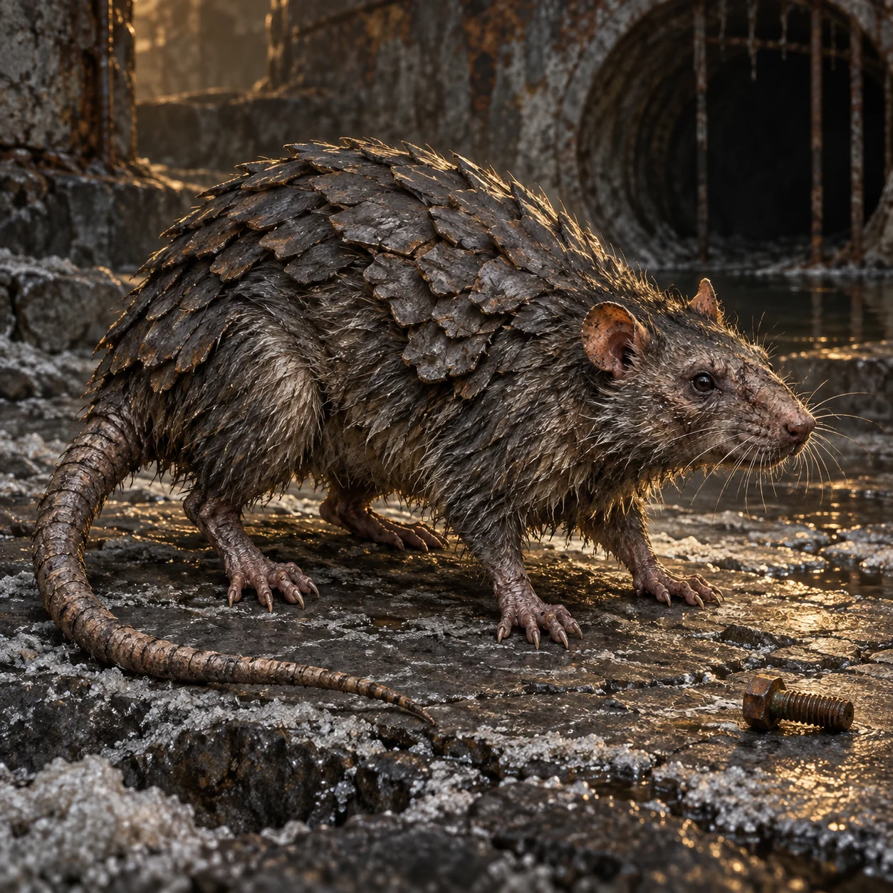

硬背鼠
Hard-backed rat
地下检修沟、温暖机房与潮后废墟
身躯低伏，背部覆盖分节的灰黑硬皮；转身时会擦过窄缝，留下成对的刮痕。幼体能钻进成年个体过不去的孔。
吃块根、虫卵、菌皮与油脂残屑，偏爱温暖、遮蔽且能找到筑巢软料的地方。啃线是寻找软材料和进入缝隙的行为，不靠吃金属或电流生存。
群体迁入可以咬伤人员、拖走布料、损坏绝缘和储粮，先让基础设施失效，再迫使人停工。
习性与边界
硬背保护躯干，腹面和活动关节仍脆弱；食物不足会散群。它们会记住容易进入的口，但不理解线路或人类计划。